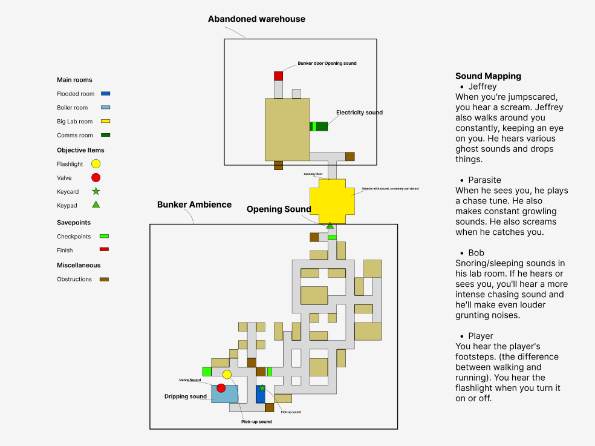
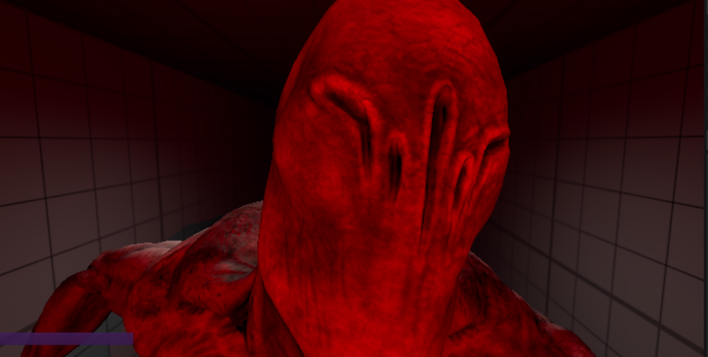

Jeffrey
He seems to be everywhere and nowhere. Jeffrey is always finding you and wants to play, but his attention is hard to escape.
An abandoned bunker horror game about exploring, surviving and never feeling quite safe.
Sublevel is a bunker horror game made by a team of three students over eight weeks. You wake up alone in an abandoned underground facility where a scientist once performed experiments on people. Explore the bunker, solve the obstacles in your way and find a route to the surface before the creatures below find you.
The bunker is more than a setting: its dark corridors, unsettling sounds, interactive objects and sudden scares make every step feel uncertain. You never know what is waiting around the next corner.
Three enemies haunt the bunker, each creating a different kind of threat.
He seems to be everywhere and nowhere. Jeffrey is always finding you and wants to play, but his attention is hard to escape.
Hungry and trapped for years in a flooded part of the bunker, Phil is not someone you want to meet.
If Bob appears, do not wait around. Run.
The enemy characters use 3D meshes sourced from Mixamo.
During the development of our abandoned bunker horror game, I focused on player movement, interactables, jumpscares, and sound design. My goal was to make the player feel immersed in the environment while keeping exploration intuitive and tense.

I designed and implemented the game's audio system to make the bunker feel alive and unsettling. I worked with ambient sounds, interaction sounds, warning cues, and environmental sounds such as distant bangs and pipe noises. Different areas received their own ambience, while variations in repeated sounds helped prevent the audio from becoming predictable.
I worked on the player movement to make exploration through the bunker feel responsive and natural. Movement was designed to support the horror experience by giving the player enough control while maintaining a sense of vulnerability.
I designed and implemented key interactions such as doors, valves, keycards, pickups, and hiding spots. I used Blueprint Actors and a unified interaction system so new interactables could be added efficiently. Clear interaction feedback helped players understand what they could interact with without breaking immersion.
I worked on scripted environmental triggers and jumpscares to support the pacing of the game. Instead of relying only on sudden scares, I used interactions, environmental events, and audio cues to build anticipation before an encounter.

Play Sublevel on itch.io, or keep scrolling to learn about the game and my work on it.
These systems helped turn the bunker from a static environment into a responsive and tense horror experience. Playtesting showed clearer navigation, stronger interaction, and a more uncomfortable atmosphere, which supported the intended horror experience.